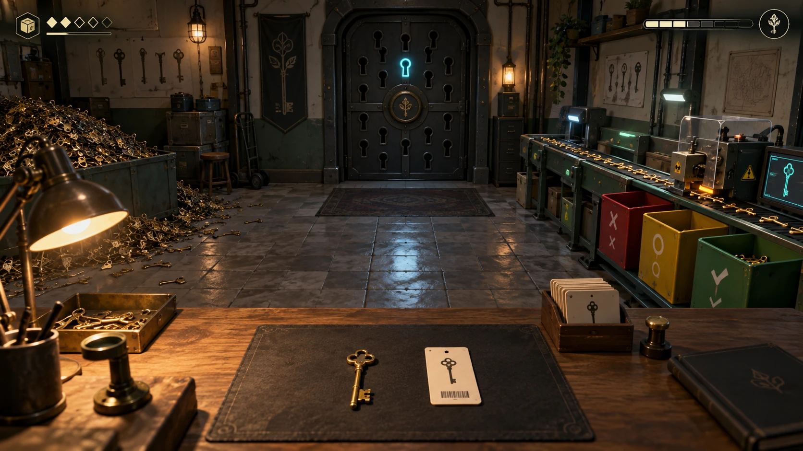

열쇠 더미에서 하나를 꺼내 주문 카드에 맞춰 고쳐 보내는 관리국 직원. 어느 주문부터, 지도에서 지워진 집의 열쇠가 도착하기 시작한다.
방은 국가의 재산이다.
거주자는 허가된 열쇠를 지급받는다.
문을 잠글 자유는 보장한다.
국가에 대해 잠글 자유는 제외한다.주거 안내문
가상의 공산주의 공국은 모든 열쇠를 관리한다. 이사와 철거는 서류상 “주소 정리”로 처리되며, 열쇠는 반드시 국가에 반납해야 한다.
직무: 주문 카드에 따른 열쇠 정비
발송: 벽면 운송구
민원: 서면 접수
수령인이 보이지 않아도
수령 확인서는 도착한다.작업실의 일상
관리국은 도시의 열쇠와 주문을 관로로 주고받는다. 국민은 짧은 주문으로, 상부는 인쇄 지침으로만 존재한다. 플레이어가 오기 전부터 방과 운송 장치는 작동하고 있었다.
해체된 건물
이전된 거주지
정리 완료 주소
서류는 폐기해도 된다.
열쇠는 폐기하지 않는다.열쇠 보존 지침
한쪽에 쌓인 열쇠는 새 주인을 기다리는 재료처럼 보인다. 하지만 오래된 고리마다 사라진 거리와 방 번호가 남아 있다. 국가가 필요 없다고 한 주소를, 물건들은 계속 기억한다.
현관 열쇠 한 개.
기존 열쇠는 동봉함.
수령처: 동부 302호
이제 안쪽에서도 잘 잠깁니다.
처음에는 생활용품을 고쳐 보내는 평범한 업무다. 수령 확인서는 방 너머에 누군가 산다는 사실만 남긴다. 그 사람의 사연이나 얼굴을 설명하지 않는다.
용도: 국가 문서 보관실
부속: 구형 열쇠 한 개
용도: 주거
반납 사유: 건물 철거
같은 주소가 이번에는 국가 창고로 적혀 온다. 철거됐다는 집의 열쇠에는 최근 사용한 흔적이 있다. 낡은 표찰을 떼어낸 자리 아래에서 같은 번호가 다시 드러난다.
현관용. 예전 규격대로.
주소 정정은 아직 처리 중.
현행 지도: 해당 주소 없음
운송 확인서: 수령 완료
없는 주소로 보낸 물건이 정상적으로 도착한다. 반송된 포장에는 새 석회 가루와 문틀의 페인트가 묻어 있다. 지도에서 사라진 것과 실제로 없어진 것이 다르다는 증거다.
“찾을 수 없음”이라는 표현을 금한다.
정리 완료 주소는 “없음”으로 기재한다.
건물이 남아 있다는 사실은
주소의 존재를 증명하지 않는다.민원 회신 문구
상부는 오래된 주소에 대한 질문을 정정문으로 돌려보낸다. 지침은 불가능한 상황을 일상적인 행정 문제로 취급한다. 웃기지만, 반복해서 읽으면 차가운 문장들이다.
공개 지도에서 삭제
거주자 접근권 회수
국가 관리용 출입구 유지
철거란, 국민에게서
그곳으로 가는 길을 없애는 일이다.추천 서사의 핵심 진실
일부 방은 철거되지 않고 국가의 내부 통로에 연결되어 보관된다. 반납 열쇠는 그 방으로 향하는 접근 수단이었다. 옛 주소의 주문은 집으로 돌아갈 길을 찾는 사람들이 보낸 것이다.
현재 표기: 시설 없음
이전 용도: 주거
열쇠 표찰: 작업실 안쪽 문과 동일
창고인 줄 알았던 문 옆에
벽지의 꽃무늬가 남아 있다.작업실에서 발견하는 장면
도착한 옛 도면에는 작업실과 똑같은 창틀과 벽의 흠집이 있다. 이곳 역시 주소를 빼앗긴 방이었다. 플레이어가 알고 있던 유일한 장소가, 국가 기록에서는 존재하지 않는다.
이전 주소와 현주소의 일치가 확인되면
현장 담당자가 반납처를 정정할 수 있다.
방은 남아 있다.
옛 표찰과 국가 보관 기록이 일치한다.
반납처는 원래 거주지다.
사소한 배송 오류를 처리하던 조항이 결말의 근거가 된다. 플레이어는 새 권력을 얻는 대신, 국가가 스스로 남긴 기록으로 반납을 성립시킨다. 첫 장면의 사무적인 조항이, 마지막에 사람에게 돌아갈 길을 만든다.
이전 용도: 주거
현재 용도: 국가 보관
반납처: 원래 거주지
안쪽 문이 열리면,
금속 덧벽 뒤에 가려졌던
작은 현관이 드러난다.추천 엔딩 장면
문 너머에는 새 도시 대신, 이 방의 원래 현관이 있다. 국가 표찰 아래에 남은 집 번호가 주문 카드와 일치한다. 이곳도 돌려줄 수 있는 집이었다는 사실이 눈앞에서 확인된다.
보관 상태: 해제
거주자 접근: 복구
열쇠 수령: 확인
회신: 현관 옆 반납 창구는 남겨 두십시오.
국가만 열던 문을,
다시 주인도 열 수 있게 되었다.추천 엔딩의 마지막 문장
집을 돌려받은 주인의 요청으로, 현관 옆 반납 창구는 남는다. 모든 문제를 해결했다는 선언 없이, 문 닫히는 소리와 새 주문 한 장으로 끝난다. 이후에도 평범한 열쇠 주문과 주소 복구 요청이 도착한다.
집들은 돌아가지만, 상부는 이를
“유휴 공간 재배정 성과”로 발표한다.
정정 조항은 그대로 남는다.
문 너머 현관에 첫 주문의 표찰이 있다.
마지막 수령 확인서는 첫 문장과 같다.
“이제 안쪽에서도 잘 잠깁니다.”
A는 국가가 선의까지 실적으로 흡수하는 풍자를, B는 작업실의 정체에 남는 의문을 강조한다. 두 안은 선택형 분기 시스템 제안이 아니라, 추천 결말을 대체할 수 있는 이야기 초안이다.